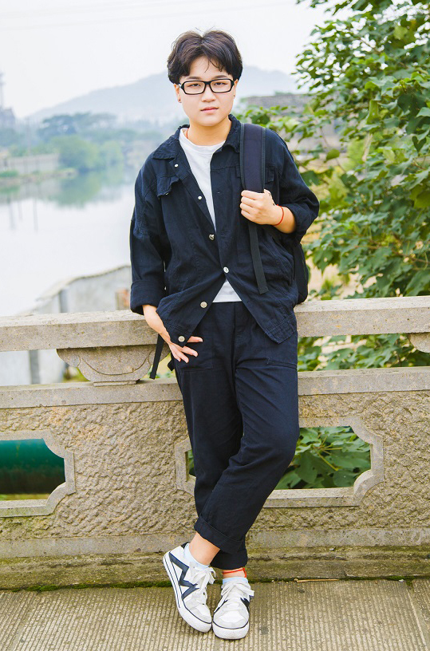
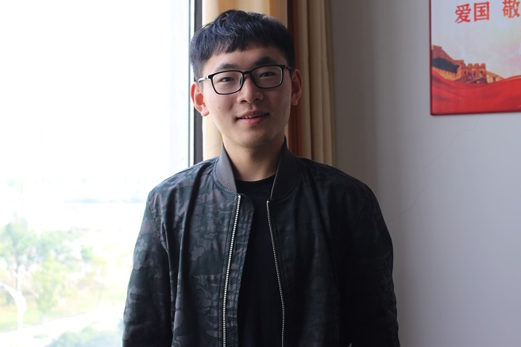
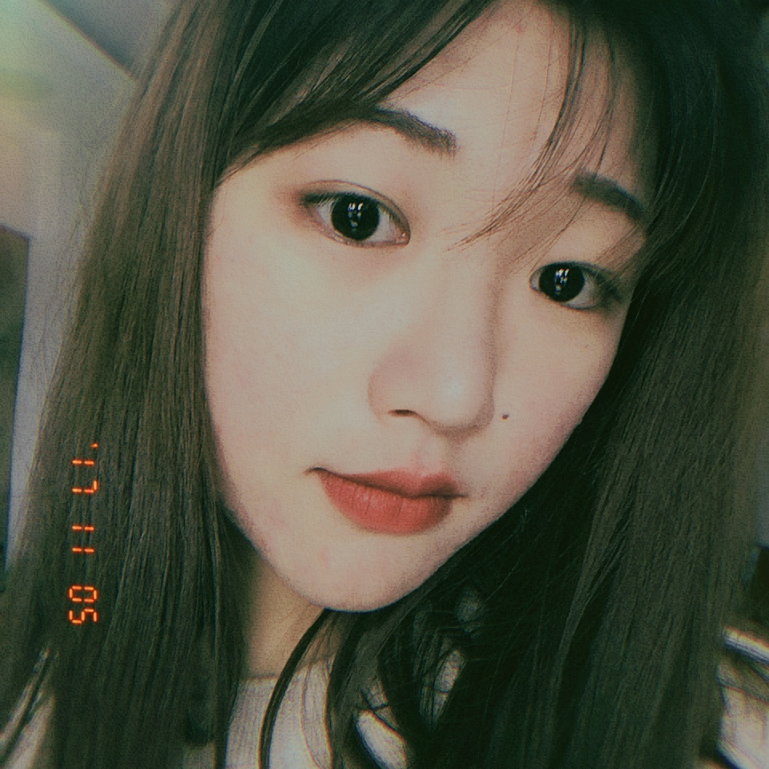
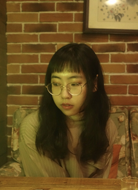
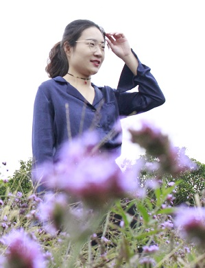
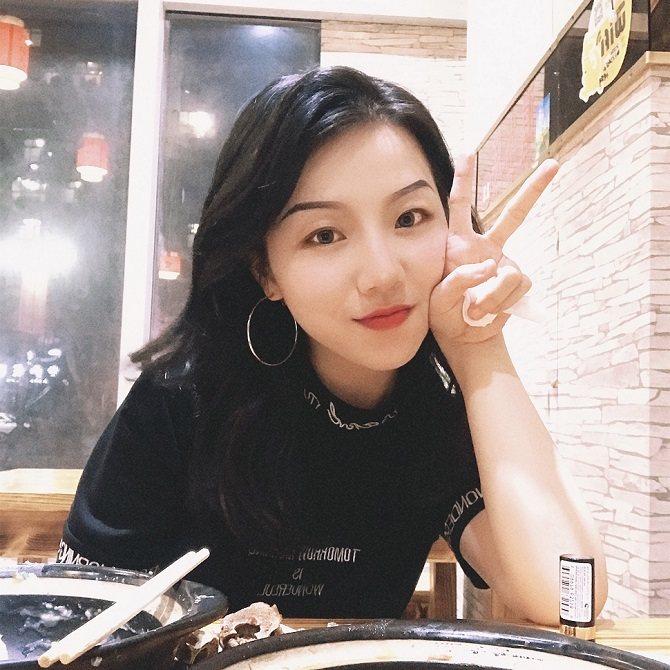
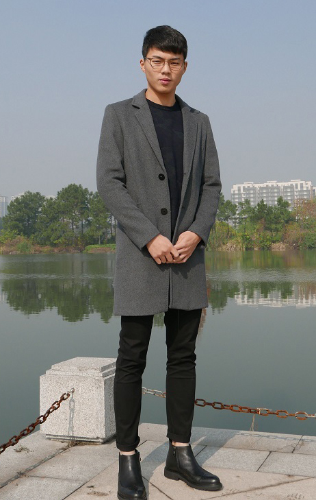
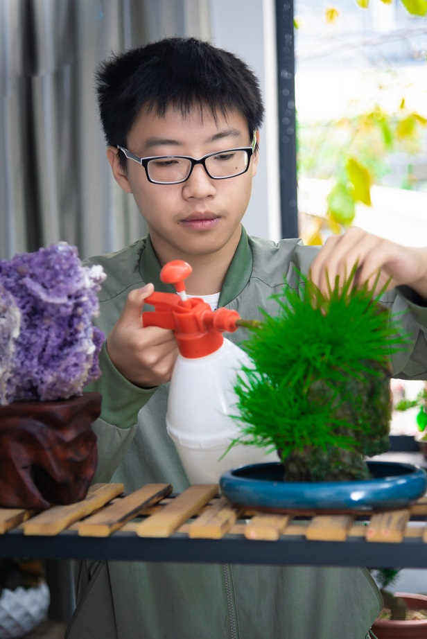
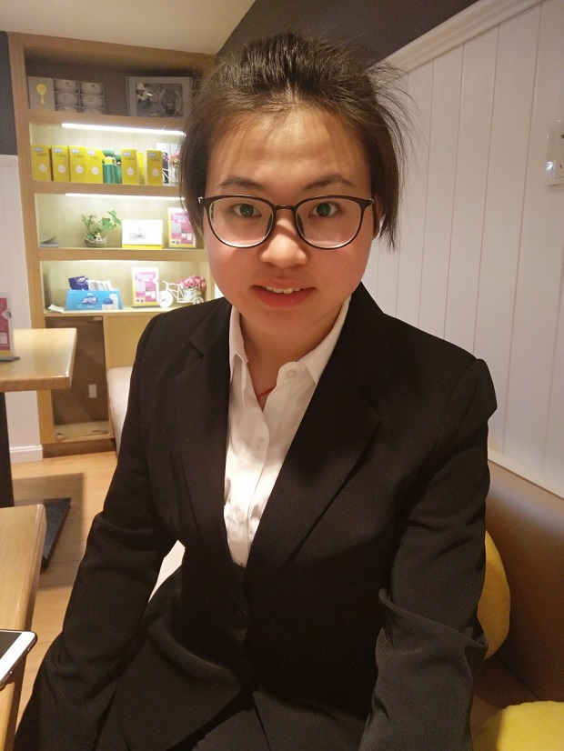

绍兴文理学院元培学院第一届“蔡元培”奖学金候选人现场展示投票
- 参与选手
10 - 累计投票
投票规则：每人限投6票
这不 一起来目睹才华横溢的元培学子~
1

分院：语言文学分院
姓名：刘 言
班级：汉语言文学1501班
政治面貌：团员
职务：“筑梦浙江支教队”秘书部长、宣讲团讲师、外事联络员
查看介绍
2

分院：信息与机电工程分院
姓名：朱华中
班级：机械电子工程1501班
政治面貌：中共党员
职务：班长
查看介绍
3

分院：经济管理分院
姓名：沈 文
班级：会计1501
政治面貌：团员
职务：经济管理分院团总支学生会主席
查看介绍
4

分院：医药与健康分院
姓名：何 丹
班级：药学1502
政治面貌：中共党员
职务：班长、医药与健康分院学生党支部组织委员
查看介绍
5

分院：经济管理分院
姓名：何 宇
班级：法学1501
政治面貌：团员
职务：心理委员
查看介绍
6

分院：纺织服装与艺术设计分院
姓名：张春燕
班级：纺工1501班
政治面貌：中共党员
职务：班长
查看介绍
7

分院：纺织服装与艺术设计分院
姓名：林雨婷
班级：服饰1501班
政治面貌：预备党员
职务：原分院学生会主席
查看介绍
8

分院：建筑工程分院
姓名：赵 杰
班级：土木1504
政治面貌：中共党员
职务：体育委员
查看介绍
9

分院：建筑工程分院
姓名：徐 磊
班级：园林1501
政治面貌：团员
职务：绍兴青禅客园林绿化有限公司董事长
查看介绍
10

分院：经济管理分院
姓名：黄施施
班级：国际经济与贸易1502班
政治面貌：预备党员
职务：班长、大学生媒体中心文编部部长、浙江省“筑梦浙江支教队”工作人员、党员宣讲团讲师
查看介绍
欣赏完这些优秀学子
接下来就是你们发挥作用的时候啦
选择你喜欢的同学
投！票！吧！
-
汉语言1501 刘言
-
机电1501 朱华中
-
会计1501 沈文
-
药学1502 何丹
-
法学1501 何宇
-
纺工1501 张春燕
-
服饰1501 林雨婷
-
土木1504 赵杰
-
园林1501 徐磊
-
国贸1502 黄施施